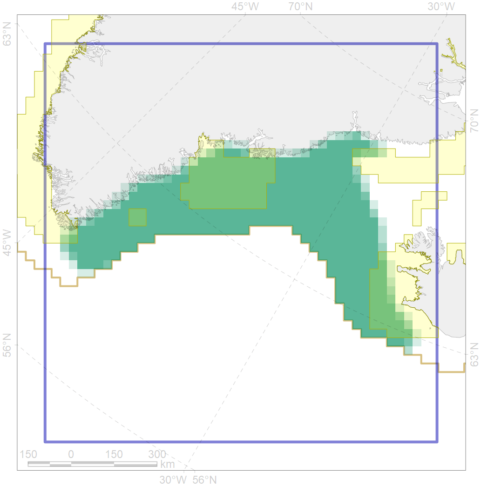
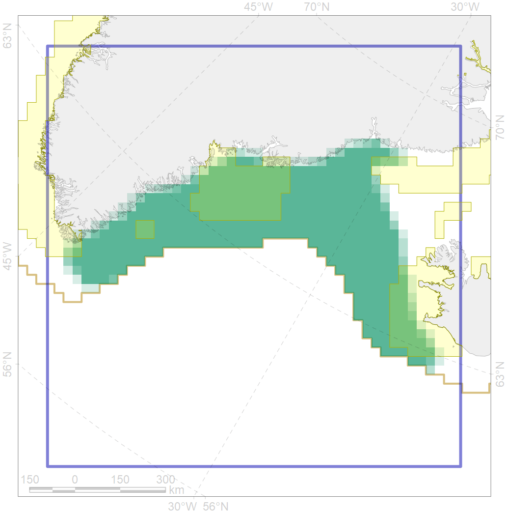

5048
 

| CF code | 5048 |
| CF name | Fin whale summer feeding areas in the East Greenland and West Iceland |
| Time Period | 1987-2015 |
| Source(s) | Hansen et al 2018; Vikingsson et al 2009 |
| Seasonality | June-September |
| Depth Horizon | 0-200 |
| Methodology | Aerial and ship surveys |
| Use Restrictions | |
| Author Name | Filatova |
| Notes | |
| Scenario’s Target | 0.264 |
| Target Achievement | 0.265 (Scenario: 100.4%) |
| PAC | Share of the Total Amount within the PAC | Share of the Target Achievement for the ArcNet | PAC’s Contribution to the Target Achievement |
|---|---|---|---|
| 32 | 0.8%0.8% | 2.2%2.2% | 2.2%2.2% |
| 38 | 6.8%6.8% | 21.9%21.9% | 21.8%21.8% |
| 42 | 15.7%15.7% | 54.6%54.6% | 54.4%54.4% |
| 43 | 1.0% | 3.4% | 3.4% |
| 44 | 0.6%0.6% | 2.1%2.1% | 2.0%2.1% |
| inner | 25.0%25.0% | 84.2%84.2% | 83.8%83.8% |
| outer | 75.0%75.2% | 16.3%16.9% | 16.2%16.9% |
| † supplement values are for area consistence whereas principal values are for Accenter compatible gridded stats |